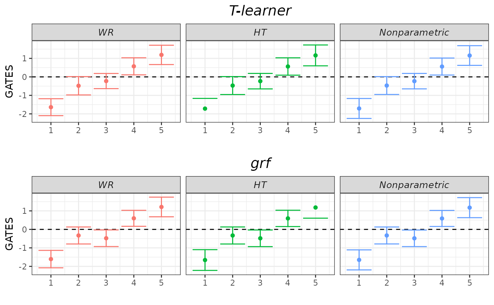
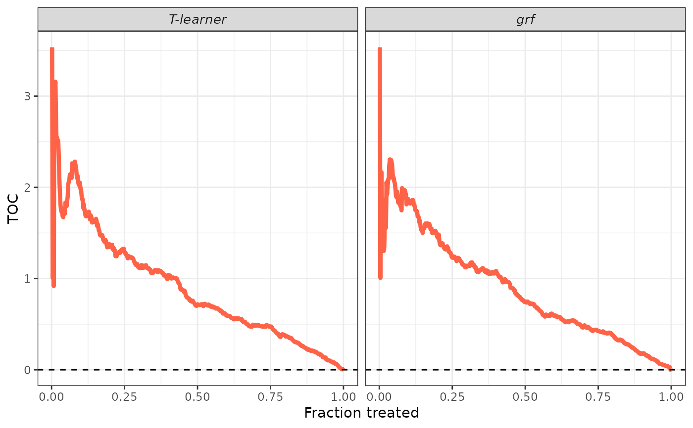

Validates CATE models by estimating the best linear predictor (BLP) of the actual CATEs using the estimated CATEs, the sorted group average treatment effects (GATES), and the rank-weighted average treatment effects (RATEs) induced by the estimated CATEs.
valiCATE(
Y_tr,
Y_val,
D_tr,
D_val,
X_tr,
X_val,
cates_val,
strategies = c("WR", "HT", "AIPW"),
denoising = c("none", "cddf1", "cddf2", "mck1", "mck2", "mck3"),
pscore_val = NULL,
mu_val = NULL,
mu0_val = NULL,
mu1_val = NULL,
n_groups = 5,
beneficial = TRUE,
n_boot = 200,
crossfit_dr = TRUE,
verbose = TRUE
)Arguments
- Y_tr
Observed outcomes for the training sample.
- Y_val
Observed outcomes for the validation sample.
- D_tr
Treatment indicator for the training sample.
- D_val
Treatment indicator for the validation sample.
- X_tr
Covariate matrix for the training sample (no intercept).
- X_val
Covariate matrix for the validation sample (no intercept).
- cates_val
Named list storing CATE predictions on the validation sample produced by different models. Models must be estimated using only the training sample.
- strategies
Character vector controlling the identification and estimation strategies to implement for BLP and GATES. Admitted values are
"WR","HT", and"AIPW".- denoising
Character vector controlling if and which additional covariates to include in the regressions for BLP and GATES to reduce the variance of the estimation. Admitted values are
"none","cddf1","cddf2","mck1","mck2", and"mck3".- pscore_val
Propensity score predictions on the validation sample. Must be produced by a model estimated using only the training sample (unless the propensity score is known, in which case we provide the true values).
- mu_val
Conditional mean predictions on the validation sample. Must be produced by a model estimated using only the training sample.
- mu0_val
Control units' conditional mean predictions on the validation sample. Must be produced by a model estimated using only the training sample.
- mu1_val
Treated units' conditional mean predictions on the validation sample. Must be produced by a model estimated using only the training sample.
- n_groups
Number of groups to be formed for the GATES analysis.
- beneficial
Logical, whether the treatment is beneficial to units. If
TRUE, units are ranked according to decreasing values ofcates_valto estimate the RATEs, otherwise they are ranked according to increasing values ofcates_val.- n_boot
Number of bootstrap replications to estimate the standard error of the RATE estimates.
- crossfit_dr
Logical, whether the doubly-robust scores should be cross-fitted in the validation sample. If
FALSE, the scores are constructed using the out-of-sample predictions from the nuisance models trained in the training sample.- verbose
Logical, set to FALSE to prevent the function from printing the progresses.
Value
An valiCATE object.
Details
The user must provide observations on the outcomes, the treatment status, and the covariates of units in the training and validation samples separately
using the first six arguments. The user must also provide a named list storing CATE predictions on the validation sample produced from different models (the Example section below shows how to construct such a list).
Be careful, CATE models must be estimated using only the training sample to achieve valid inference.
The valiCATE function allows the implementation of three different strategies for BLP and GATES identification and estimation: a) Weighted Residuals (WR), Horwitz-Thompson (HT), and
Augmented Inverse-Probability Weighting (AIPW). The user can choose their preferred strategies by controlling the strategies argument. This has no impact on RATEs estimation. GATES are also
always estimated using an additional nonparametric approach.
Most of the BLP and GATES estimation strategies involve fitting a suitable linear model. For each model, there exist various sets of constructed covariates that one can add to reduce the variance of
the estimation. The user can choose whether to add these additional covariates by controlling the denoising argument (check the online
denoising vignette for details). This has no impact on RATEs estimation and on the results from the nonparametric GATES estimation strategy.
The constructed covariates depend on particular nuisance functions, e.g., propensity score and conditional mean of the outcome. The user can supply predictions on the validation sample of these functions
by using the optional arguments pscore_val, mu_val, mu0_val, and mu1_val. Be careful, as these predictions must be produced by models fitted using only the training sample. If not
provided by the user, these functions are estimated internally via honest regression_forests using only the training sample.
For the linear models, standard errors are estimated using the Eicker-Huber-White estimator. Under our careful sample splitting procedure, these standard errors can then used to test various
hypotheses of effect heterogeneity. For the GATES, we focus on two distinct hypotheses: whether all GATES are equal to each other, and whether the largest and the smallest GATES are different from each other.
The nonparametric approach tests only the first of these hypotheses. Check the hypotheses testing vignette
for details.
To estimate the BLP and GATES using the AIPW strategy, doubly-robust scores are estimated internally in one of two ways: if crossfit_dr is TRUE, we use
the validation sample and 5-fold cross fitting with honest regression forests (see the
dr_scores function for details), while if crossfit_dr is FALSE, we use the out-of-sample predictions from the nuisance models trained
using the training sample. The doubly-robust scores are also used to estimate the RATEs.
Groups for the GATES analysis are constructed by cutting the distribution of cates_val into n_groups quantiles. If this leads to one or more groups composed of only treated or only control units,
the function raises an error. Possible solutions include: a) change your original training-validation sample split; b) increase the fraction of observations allocated to the validation sample.
The valiCATE function estimates two different RATEs: AUTOC and QINI coefficients. Sample-averaging estimators are employed. Standard errors are estimated by the standard deviation of the bootstrap
estimates obtained using the half-sample bootstrap.
Check the online short tutorial for a guided usage of this function.
Examples
## Generate data.
set.seed(1986)
n <- 1000
k <- 2
X <- matrix(rnorm(n * k), ncol = k)
colnames(X) <- paste0("x", seq_len(k))
D <- rbinom(n, size = 1, prob = 0.4)
mu0 <- 0.5 * X[, 1]
mu1 <- 0.5 * X[, 1] + X[, 2]
Y <- mu0 + D * (mu1 - mu0) + rnorm(n)
## Sample split.
train_idx <- sample(c(TRUE, FALSE), length(Y), replace = TRUE)
X_tr <- X[train_idx, ]
X_val <- X[!train_idx, ]
D_tr <- D[train_idx]
D_val <- D[!train_idx]
Y_tr <- Y[train_idx]
Y_val <- Y[!train_idx]
## CATEs estimation. Models are estimated with training sample.
# T-learner.
library(grf)
forest_treated <- regression_forest(X_tr[D_tr == 1, ], Y_tr[D_tr == 1])
forest_control <- regression_forest(X_tr[D_tr == 0, ], Y_tr[D_tr == 0])
cates_val_t <- predict(forest_treated, X_val)$predictions -
predict(forest_control, X_val)$predictions
# Grf.
forest_grf <- causal_forest(X_tr, Y_tr, D_tr)
cates_val_grf <- predict(forest_grf, X_val)$predictions
## CATEs validation.
# Use all strategies with no denoising.
strategies <- c("WR", "HT")
denoising <- "none"
# We know true pscore.
pscore_val <- rep(0.4, length(Y_val))
# Construct CATEs list.
cates_val <- list("T-learner" = cates_val_t,
"grf" = cates_val_grf)
# Call main function.
validation <- valiCATE(Y_tr, Y_val, D_tr, D_val, X_tr, X_val, cates_val,
strategies = strategies, denoising = denoising,
pscore_val = pscore_val)
#> Estimating nuisance functions and DR scores;
#> BLP estimation;
#> GATES estimation;
#> RATE estimation;
#> Output.
#>
## Generic S3 methods.
summary(validation, target = "BLP")
#>
#> ── BLP RESULTS ─────────────────────────────────────────────────────────────────
#>
#> ── T-learner ──
#>
#> MODEL | ATE | HET
#> ----------------- | --------------- | --------------- |
#> wr_none | -0.12 | 1.05 |
#> | [-0.333, 0.089] | [0.811, 1.299] |
#> ht_none | -0.14 | 1.07 |
#> | [-0.363, 0.086] | [0.791, 1.345] |
#> ── grf ──
#>
#> MODEL | ATE | HET
#> ----------------- | --------------- | --------------- |
#> wr_none | -0.12 | 1.06 |
#> | [-0.331, 0.090] | [0.810, 1.305] |
#> ht_none | -0.14 | 1.06 |
#> | [-0.363, 0.086] | [0.783, 1.338] |
#> ────────────────────────────────────────────────────────────────────────────────
summary(validation, target = "BLP", latex = TRUE)
#> \begingroup
#> \setlength{\tabcolsep}{8pt}
#> \renewcommand{\arraystretch}{1.1}
#> \begin{table}[H]
#> \centering
#> \begin{adjustbox}{width = 1\textwidth}
#> \begin{tabular}{@{\extracolsep{5pt}}l c c c c}
#> \\[-1.8ex]\hline
#> \hline \\[-1.8ex]
#> & \multicolumn{2}{c}{\textit{T-learner}} & \multicolumn{2}{c}{\textit{grf}} \\ \cmidrule{2-3} \cmidrule{4-5}
#> & \textit{WR} & \textit{HT} &\textit{WR} & \textit{HT} \\
#> \addlinespace[2pt]
#> \hline \\[-1.8ex]
#>
#> \multirow{2}{6em}{ATE ($\hat{\beta}_1$)} & -0.12 & -0.14 & -0.12 & -0.14 \\
#> & [-0.333, 0.089] & [-0.363, 0.086] & [-0.331, 0.090] & [-0.363, 0.086] \\
#> \multirow{2}{6em}{HET ($\hat{\beta}_2$)} & 1.05 & 1.07 & 1.06 & 1.06 \\
#> & [0.811, 1.299] & [0.791, 1.345] & [0.810, 1.305] & [0.783, 1.338] \\
#>
#> \addlinespace[3pt]
#> \\[-1.8ex]\hline
#> \hline \\[-1.8ex]
#> \end{tabular}
#> \end{adjustbox}
#> \caption{BLP results. $95\%$ confidence intervals are displayed in brackets under each point estimate.}
#> \label{table_blp_results}
#> \end{table}
#> \endgroup
summary(validation, target = "GATES")
#>
#> ── HYPOTHESIS TESTING RESULTS (p-values) ───────────────────────────────────────
#>
#> ── T-learner ──
#>
#> MODEL | GATES_1 = GATES_2 = ... = GATES_K | GATES_K = GATES_1
#> ----------------- | --------------------------------------------- | ----------------------------- |
#> wr_none | 0.000 | 0.000 |
#> ht_none | 0.000 | 0.000 |
#> imai_li | 0.000 | NA |
#> ── grf ──
#>
#> MODEL | GATES_1 = GATES_2 = ... = GATES_K | GATES_K = GATES_1
#> ----------------- | --------------------------------------------- | ----------------------------- |
#> wr_none | 0.000 | 0.000 |
#> ht_none | 0.000 | 0.000 |
#> imai_li | 0.000 | NA |
#> ────────────────────────────────────────────────────────────────────────────────
summary(validation, target = "GATES", latex = TRUE)
#> NOT IMPLEMENTED, AS WE FEEL ANY TABLE WOULD BE MESSY.
#> WE APPRECIATE ANY SUGGESTIONS ON NICE FORMATS YOU WOULD LIKE TO HAVE :)
#> MAY WE SUGGEST TO USE THE PRINT METHOD TO PRODUCE A NICE PLOT?
summary(validation, target = "RATE")
#>
#> ── RATEs RESULTS ───────────────────────────────────────────────────────────────
#>
#> ── T-learner ──
#>
#> WEIGHT | RATE |
#> ------------------ | ---------------- |
#> autoc | 0.89 |
#> | [0.713, Infty] |
#> qini | 0.28 |
#> | [0.233, Infty] |
#> ── grf ──
#>
#> WEIGHT | RATE |
#> ------------------ | ---------------- |
#> autoc | 0.88 |
#> | [0.711, Infty] |
#> qini | 0.28 |
#> | [0.229, Infty] |
summary(validation, target = "RATE", latex = TRUE)
#> YET TO BE IMPLEMENTED, SORRY :(
#> WE APPRECIATE ANY SUGGESTIONS ON THE FORMAT.
#> MAY WE SUGGEST TO USE THE PRINT METHOD TO PRODUCE A NICE PLOT FOR THE TOCs?
plot(validation, target = "GATES")

plot(validation, target = "TOC")

plot(validation, target = "RATE")